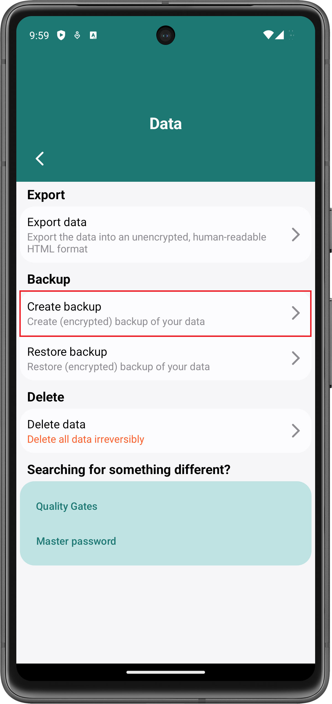
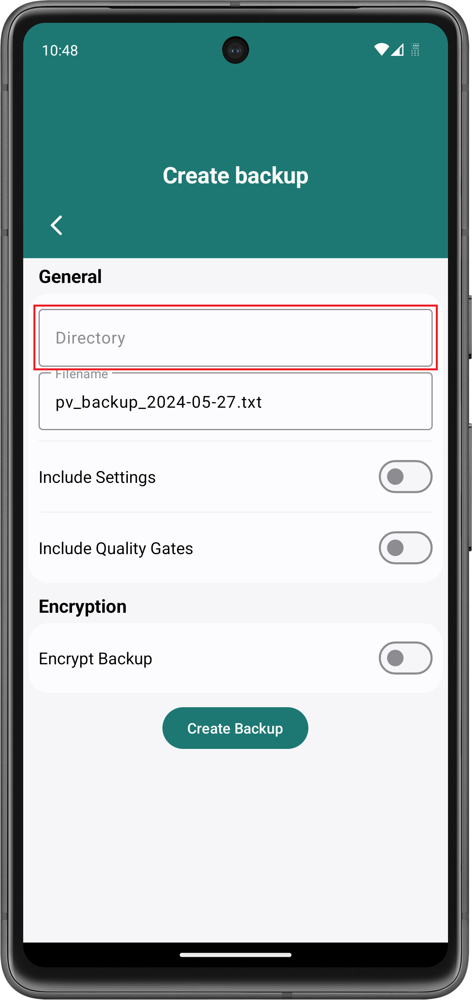
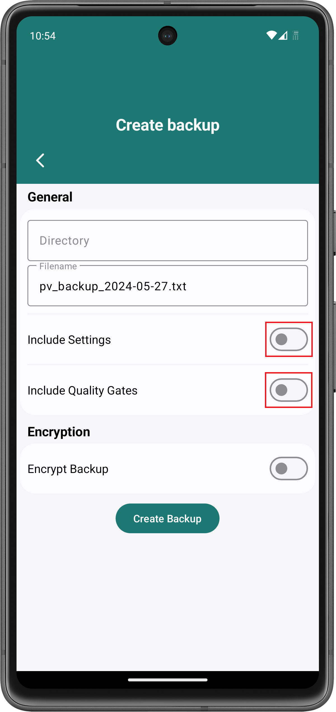
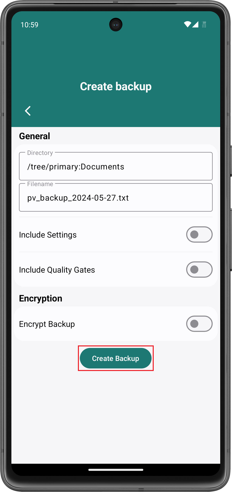
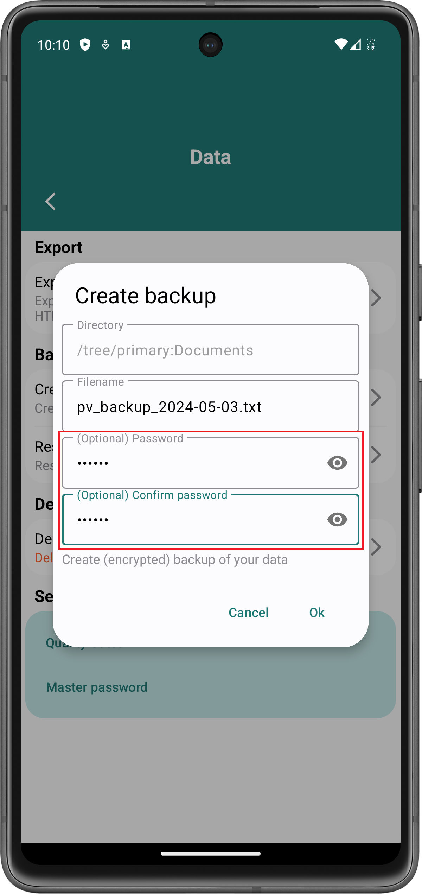
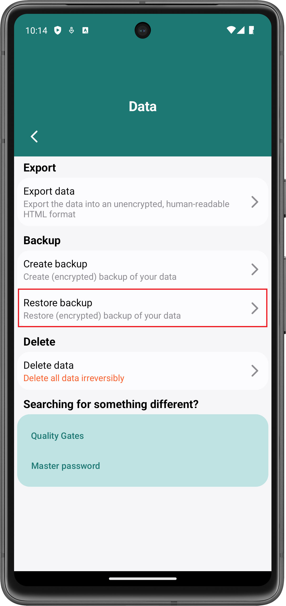
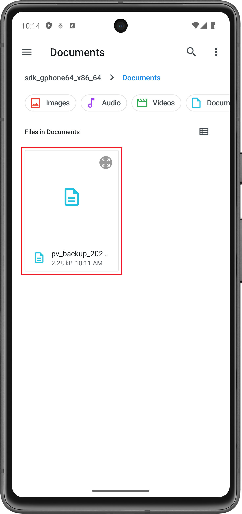
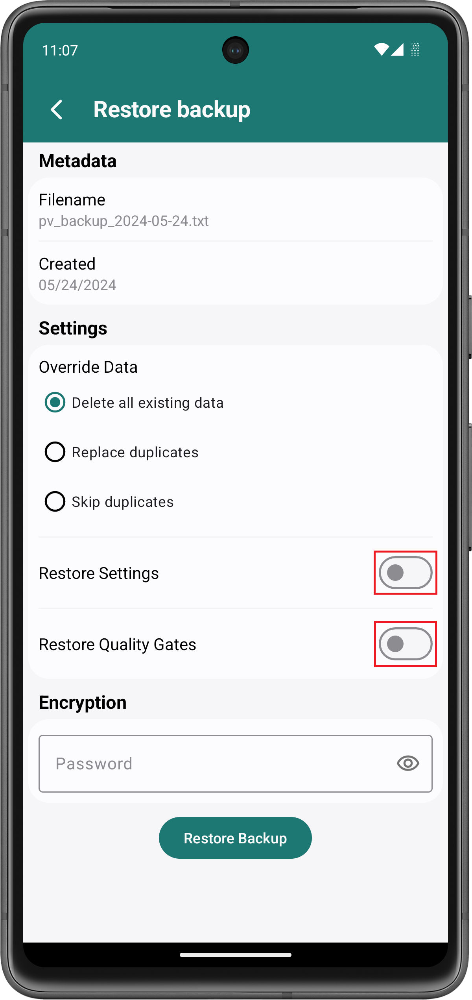
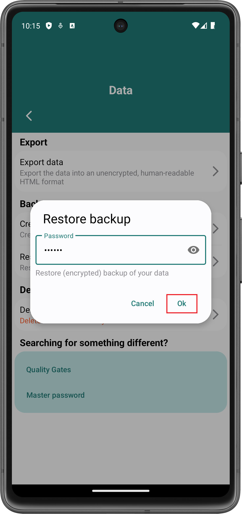
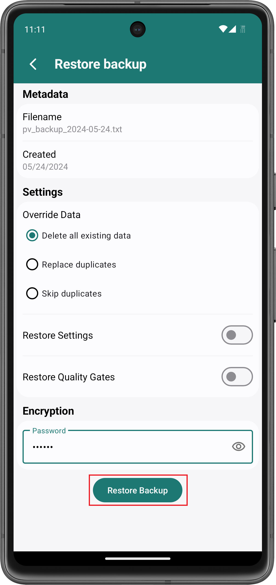

Create a backup to transfer data between devices or to save your data somewhere else in case you loose your device.
In order to create a backup, go to Settings > Data and click the Create backup-button:
Afterwards, a new window opens through which you can configure the backup. Click in the Directory-input at the top to select a folder in which to store the backup:
This opens the default file explorer of your Android device. Navigate to a directory in which you want to store your backup and click on the Use this folder-button. You may need to allow Password Vault to access files in the specified directory. In this case, click Allow:
If you want to export your app settings or the password quality gates, click on the respective switches to do so:
Finally, click on the Create backup-button to create the backup:
In order to encrypt a backup, click the respective switch and provide a password as follows:
The password is used to encrypt the backup. If you restore the backup, you will need to enter the password. Otherwise, the data cannot be decrypted.
In order to restore a backup, go to Settings > Data and click Restore backup:
Afterwards, the default file explorer of your Android device opens. Navigate to the directory in which the backup is located and click on the backup file:
A window opens through which you can restore the backup. If possible, select what to do with existing data in case you try to restore data that is already existing.
The following options are available:
Delete all existing data: This deletes all existing data from Password Vault before restoring the data from the backup.
Replace duplicates: In case some data is present in Password Vault, it gets replaced by the data from the backup.
Skip duplicates: In case some data is present in Password Vault, the respective data from the backup is not restored.
If the backup contains any app settings or quality gates, select whether you want to restore them as well:
If the backup is encrypted, provide the password that was used to create the backup:
Afterwards, click the Restore backup-button to restore the backup:
